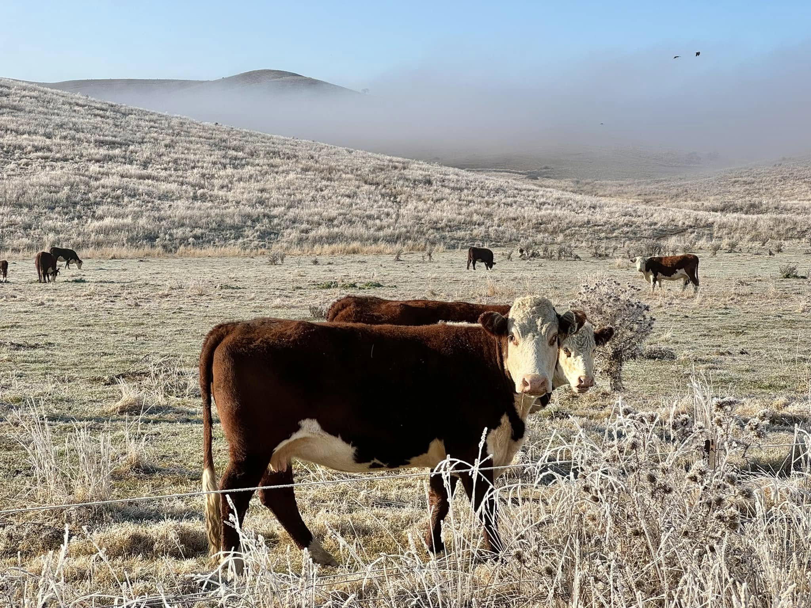

Service 05
Agricultural intelligence
Useful agricultural information shaped by practical farming, agronomy and livestock experience.
What we do
Built for real operating conditions
Four Peaks Pastoral combines advanced aerial technology with more than 24 years of practical agricultural experience.
Imagery and geospatial data are interpreted in the context of real farm operations, helping landholders monitor pasture and crops, inspect assets, plan paddocks and respond to erosion, drainage or weed issues.

05 / 07
Agricultural intelligence capability
- Crop health and establishment assessments
- Pasture condition and productivity monitoring
- Biomass and dry matter estimation
- Precision agriculture support
- Livestock water infrastructure mapping
- Fence line and asset inspections
- Paddock and property planning
- Weed identification and monitoring
- Soil erosion and drainage assessments
- Farm mapping and GIS data management
Where it fits
Common project uses
-
Crop and pasture checks
Review establishment, condition, productivity, biomass and dry matter across the property.
-
Property and asset planning
Map paddocks, fences, water infrastructure and other working assets.
-
Land condition issues
Locate weeds, erosion and drainage problems so field work can be prioritised.